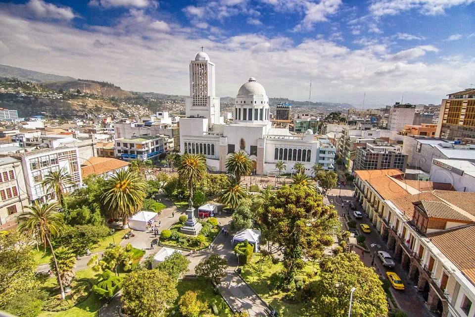
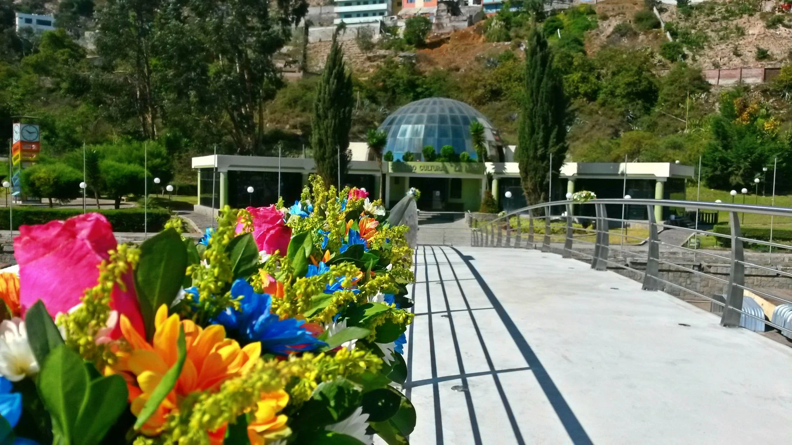
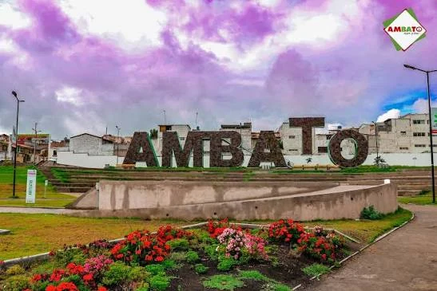

Agencia turística
Ambato: una experiencia de cultura, historia y color
Lisseth Turismo te invita a descubrir un destino lleno de parques, museos, tradición, sabores y espacios icónicos. Diseñamos esta propuesta para presentar Ambato de manera más elegante, visual y profesional.
Presentación del destino
Lo más representativo de Ambato en un solo sitio
Ambato destaca por su patrimonio, sus espacios verdes, la vida cultural y su reconocida identidad local. Estos son algunos de los lugares que mejor representan su atractivo turístico.



Atractivos destacados
Experiencias que combinan recreación, historia y belleza urbana
Ambato puede disfrutarse desde distintos enfoques: turismo cultural, paseos familiares, fotografía urbana, recorridos gastronómicos y visitas a lugares emblemáticos.
- Recorre museos, quintas y sitios de valor histórico.
- Disfruta de parques y áreas recreativas ideales para familias.
- Conoce rincones para fotografías, paseos y contacto con la identidad local.

Historia
Quinta de Juan Montalvo
Patrimonio y arquitectura vinculados a una de las figuras más importantes del pensamiento ecuatoriano.

Ciudad
Iconos de Ambato
Espacios urbanos e imágenes representativas para capturar el recuerdo del destino.
Servicios turísticos
Paquetes pensados para distintos tipos de visitantes
La agencia ofrece opciones referenciales para quienes prefieren recorridos culturales, familiares o gastronómicos, así como una propuesta más completa para conocer Ambato en un día.
Ruta Cultural
Visita espacios históricos y museos que forman parte del legado ambateño.
$18 por persona
Ambato Natural
Jardines, áreas verdes y ambientes perfectos para pasear y relajarse.
$22 por persona
Sabores de Ambato
Recorrido orientado a descubrir platos y tradiciones gastronómicas.
$20 por persona
Ambato en un Día
La opción más completa para conocer varios puntos del destino en una sola experiencia.
$35 por persona
Cultura, parques y eventos
Un sitio web creado para impresionar más
Se mejoró la propuesta visual para que no se vea simple, sino más cercana a una página turística real: mejor jerarquía, imágenes protagonistas, bloques limpios y una apariencia más elegante.
- Menos figuras redondeadas y más limpieza visual.
- Secciones más serias y profesionales.
- Mejor protagonismo de las fotografías reales.

Conoce más de Ambato
Revisa todos los destinos, descubre los servicios y completa el formulario de contacto para simular tu experiencia turística.